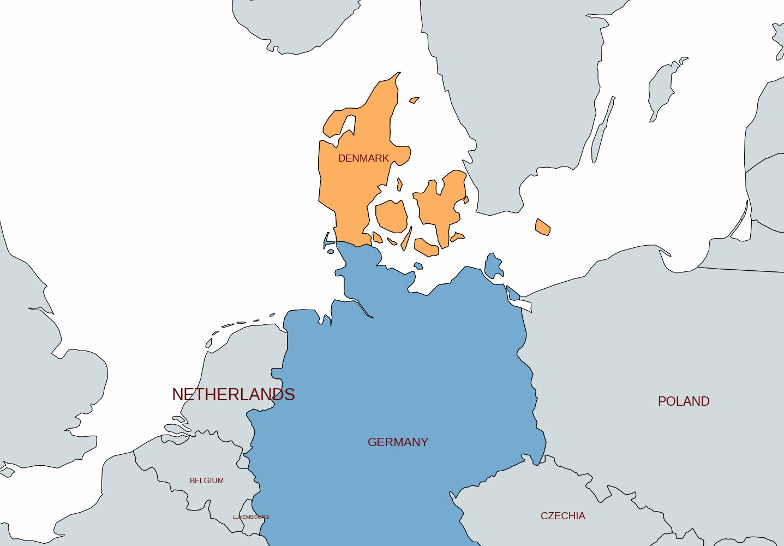
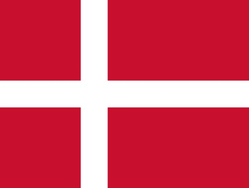
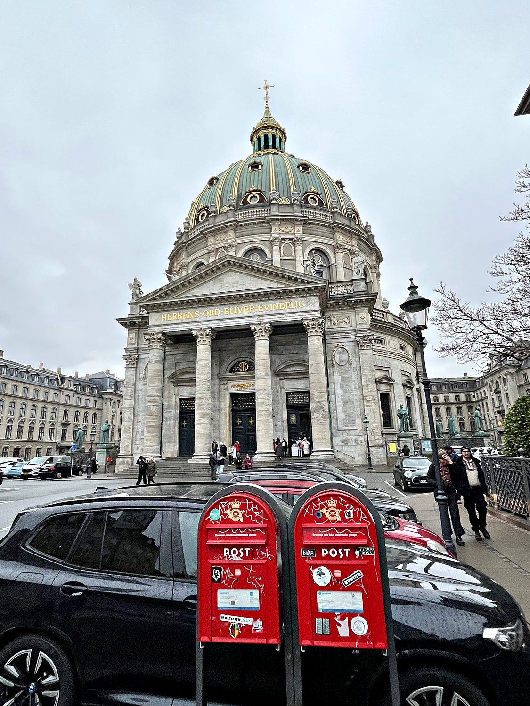
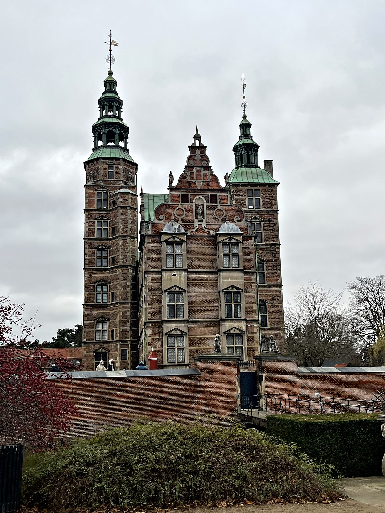
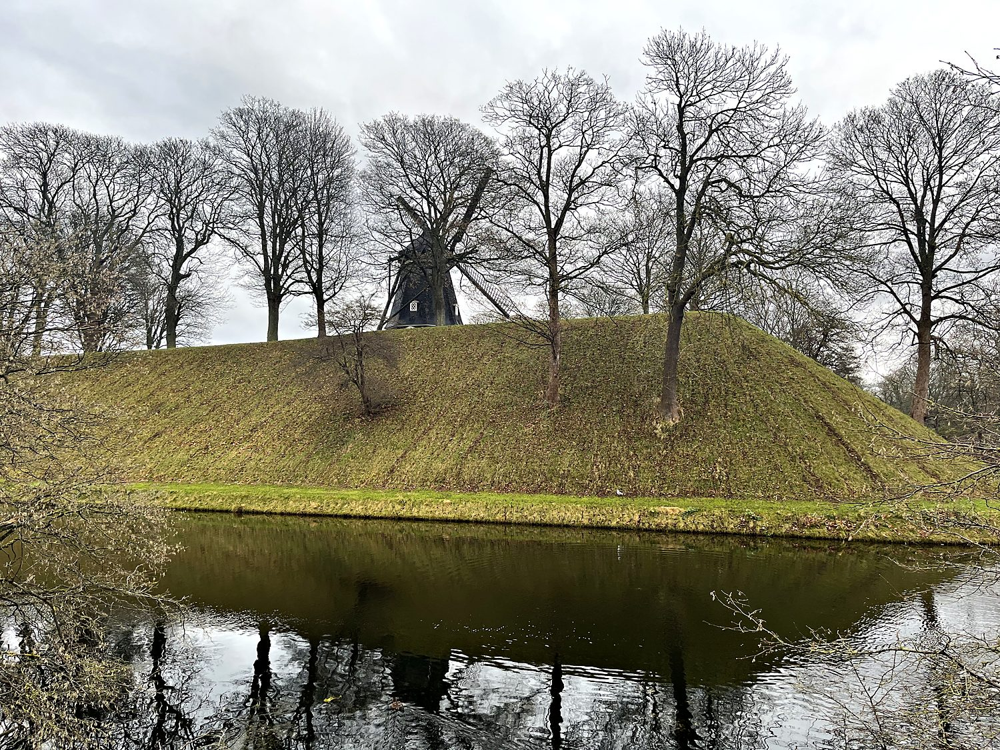

I visited Denmark in December 2024 with my friend Wren, spending my time in the capital of Copenhagen amid the short, grey days and festive lights of a Scandinavian winter. Denmark is the southernmost and most compact of the Nordic countries, a low-lying land of islands and peninsulas that consistently tops global rankings for happiness, quality of life, and general good governance. It is the sort of place that makes you wonder what everyone else is doing wrong – until you look at your grocery bill! Copenhagen in December was atmospheric in the best way: bundled-up crowds sipping mulled wine at Christmas markets, garlands strung across the old harbor, and a cozy warmth (the famous Danish hygge) glowing out from cafes against the winter gloom. We explored the city on foot, taking in royal palaces, Renaissance castles, and centuries of Danish history with plenty of wry observations about monarchy, Lutheranism, and the eternal Scandinavian question of where exactly one is supposed to find a public bathroom.
Copenhagen is a city that manages to feel both grand and effortlessly livable. It mixed royal palaces with canals and swarms with bicycles in all weather. We began at the Kastellet, a beautifully preserved star-shaped fortress with a windmill on its green ramparts. We then made our way past the famous (and famously small) Little Mermaid statue to the grand royal quarter of Amalienborg and the towering dome of Frederik's Church. From there we wandered to the postcard-perfect harbor of Nyhavn, lined with its brightly painted townhouses, and on to the King's Garden and Rosenborg Castle, the spiraling Round Tower, and the sprawling Christiansborg Palace, which houses the Danish parliament. Along the way I got a healthy dose of the Danish monarchy's quirks: the changing of the guard in their tall bearskin hats, which is ridiculously named the royal Order of the Elephant. I cannot see how any enemy force could face these “soldiers” without doubling over in laughter. I suppose this could be a valid military tactic to distract one’s opponent, though I cannot comment on how intentional it is.

Denmark is one of the oldest kingdoms in the world, with a continuous monarchy stretching back over a thousand years to the Viking age. In the 8th to 11th centuries, Danish Vikings raided, traded, and settled across much of Europe, at one point ruling a North Sea empire that included England under King Cnut the Great. The kingdom was Christianized around 965 under Harald Bluetooth, whose name, improbably, now lives on in the wireless technology in your phone. It went on to become the dominant power in Scandinavia. For a time in the late Middle Ages, the Kalmar Union united Denmark, Norway, and Sweden under a single Danish crown, making Copenhagen the seat of a formidable northern realm.

Over the following centuries Denmark's fortunes gradually contracted, as it lost Sweden, then Norway, and eventually the duchies of Schleswig and Holstein to a rising Prussia in the 19th century. Yet as its territory shrank, the country reinvented itself as a modern, liberal, and prosperous nation. It transitioned peacefully from absolute monarchy to constitutional democracy in 1849, and was occupied by Nazi Germany during World War II, during which Danes famously helped ferry most of the country's Jewish population to safety in Sweden. Denmark emerged to build one of the world's most comprehensive welfare states. Today, it is a constitutional monarchy and a founding-era member of NATO and the EU, a small country of under 6 million that punches far above its weight in design and renewable energy.
Rising over Copenhagen’s royal district is Frederik's Church, universally known as the Marble Church for its construction in gleaming stone, and crowned by one of the largest church domes in Scandinavia at some 31 meters across. Its story is a lesson in patience: the foundation stone was laid in 1749, but funding ran out and the half-built ruin sat abandoned and open to the sky for nearly 150 years before the church was finally completed in 1894. The result is a magnificent Baroque-inspired rotunda, its green-and-gold dome a landmark visible across the city, sitting on an axis with the Amalienborg palace complex nearby.

Tucked into the greenery of the King's Garden in the heart of Copenhagen sits Rosenborg Castle, a jewel of a Renaissance palace with red brick walls, copper-green spires, and the fairy-tale silhouette of a storybook castle. It was built in the early 17th century as a summer retreat by King Christian IV, Denmark's great builder-king, whose ambitious construction projects shaped much of the city's historic core. Today it houses the Danish crown jewels and the royal regalia, displayed in a treasury deep within the castle amid a dazzling hoard of gold, ivory, and gemstones that rather made me wonder about the number of elephants sacrificed for all the ivory. Wandering its richly furnished rooms and gardens offers a vivid window into the splendor of the Danish monarchy at its height, and it remains one of the most enchanting spots in the city.

One of my favorite corners of Copenhagen was the Kastellet, one of the best-preserved star fortresses in Northern Europe. It is laid out in the shape of a five-pointed star ringed by grassy ramparts and a moat. Built in the 17th century to guard the approaches to the city, it remains an active military site to this day, yet it also serves as a tranquil public park where Copenhageners come to stroll and jog. Atop its earthen walls stands a picturesque old Dutch-style windmill, and within the grounds sit a handsome yellow barracks, a church, and a scattering of old cannons pointing out over the water. Just beyond it, on the harbor promenade, sits the diminutive Little Mermaid statue, honoring Denmark's most famous storyteller, Hans Christian Andersen. It is a peaceful, green, and quietly historic place, and a reminder that Copenhagen has always been, at heart, a maritime city guarding its harbor.
